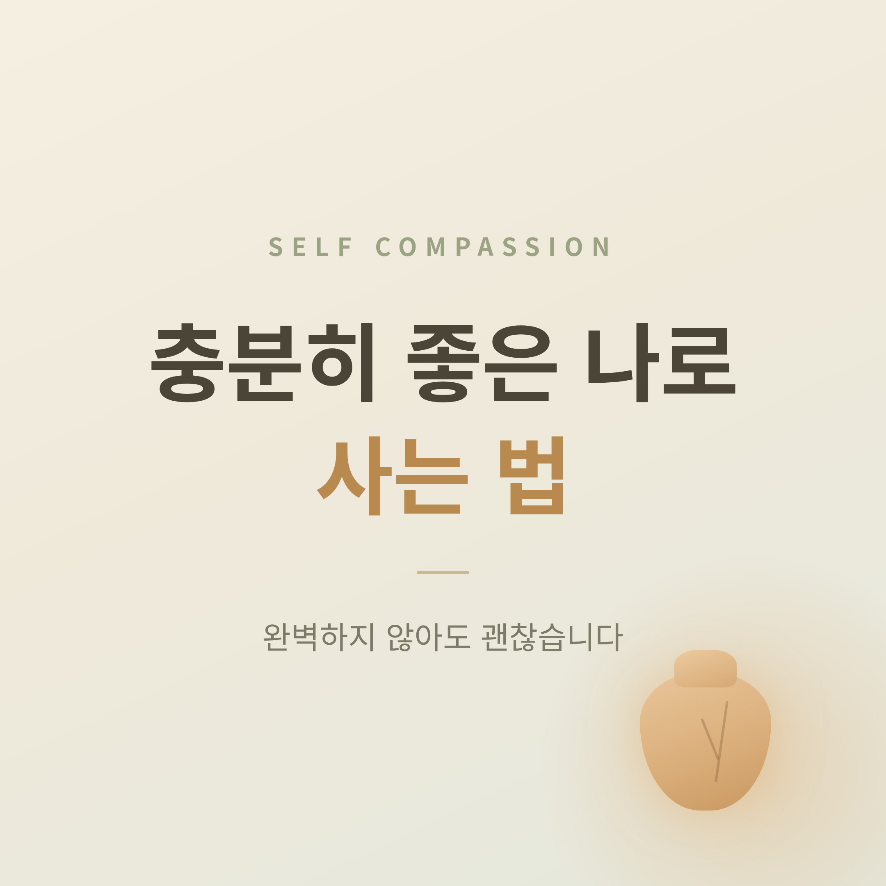
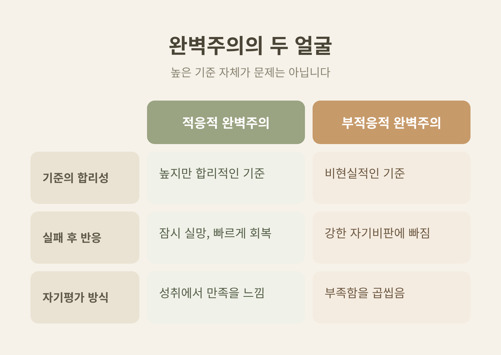
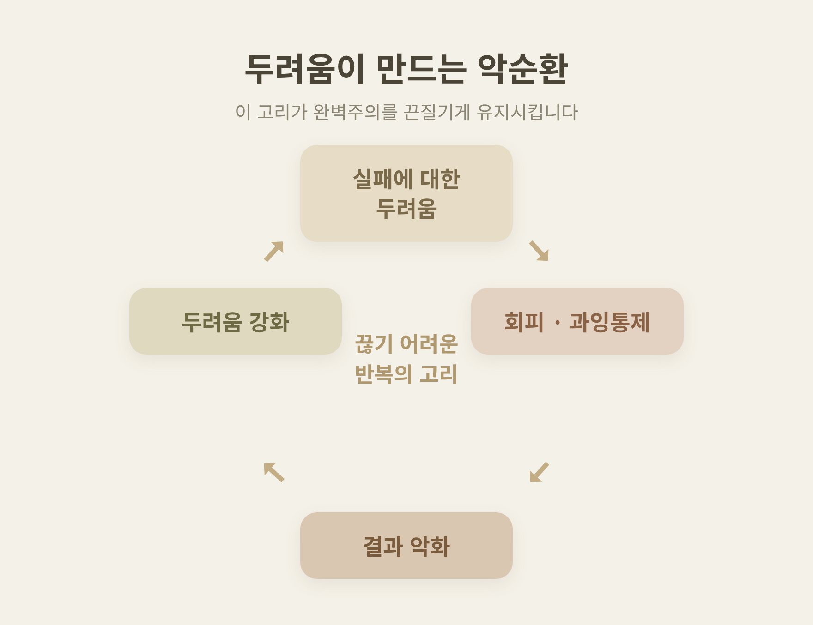
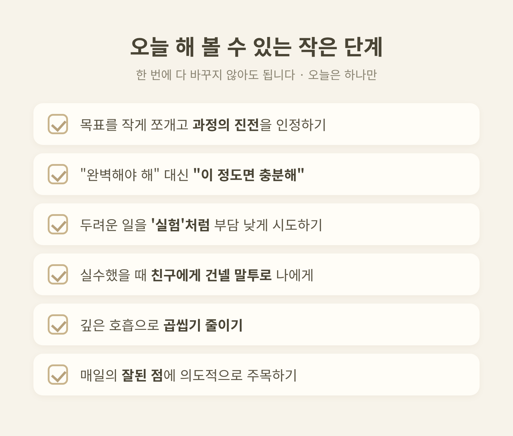

완벽주의에 지친 사람들 — '충분히 좋은 나'로 사는 법
완벽주의로 지친 마음을 어떻게 다독일 수 있는지 정리해 보려 합니다.
핵심부터 말씀드리면, 문제는 높은 기준 자체가 아니라 "실수=나의 가치가 무너짐"으로 받아들이는 가혹한 자기평가입니다.
이 글에서는 완벽주의가 어떻게 작동하는지, 그리고 '충분히 좋은 나'라는 기준으로 옮겨 가는 작은 방법을 함께 살펴보겠습니다.
먼저 한 가지 짚어 둡니다. 이 글은 정보 제공을 위한 일반적 안내이며, 전문적인 진단·상담·치료를 대체하지 않습니다. 본문의 사례는 모두 개인을 특정할 수 없도록 일반화한 예시입니다. 어려움이 크다면 전문가의 도움을 권합니다.
완벽주의에는 두 얼굴이 있습니다
완벽주의는 하나의 성향이 아닙니다.
연구에서는 두 얼굴로 나누어 봅니다.
하나는 적응적 완벽주의입니다.
높지만 합리적인 기준을 세우고, 노력으로 얻은 성취에서 만족을 느낍니다.
실패하면 잠시 실망하지만 빠르게 추스르고 다시 나아갑니다.
다른 하나는 부적응적 완벽주의입니다.
비현실적 기준을 긴장된 상태로 좇고, 실수에 대한 걱정이 과도합니다.
실패하면 강한 자기비판에 빠져 부족함을 곱씹습니다.
연구에서 흔히 쓰는 두 축은 완벽주의적 노력과 완벽주의적 우려입니다.
노력은 성공에 대한 기대·동기와, 우려는 실패에 대한 두려움·걱정과 연결됩니다.
메타분석을 보면 '우려'가 심리적 고통과 더 강하게 이어지지만, '노력'도 무관하지는 않습니다.
그래서 한쪽으로 단정하기는 어렵습니다.
다만 분명한 것은 이것입니다 — 높은 기준 자체가 문제는 아닙니다.

'누구를 향한 기준인가'에 따라 달라집니다
심리학에서 널리 쓰이는 분류는 완벽주의를 '누구를 향하느냐'로 나눕니다.
자기지향 완벽주의는 스스로에게 지나치게 높은 기준을 부과합니다.
타인지향 완벽주의는 가족·동료 등 다른 사람에게 완벽을 요구합니다.
사회부과 완벽주의는 "남들이 내게 높은 기준을 갖고 있고, 그것을 충족해야만 인정받는다"는 믿음입니다.
이 가운데 사회부과 완벽주의가 우울·불안과 가장 크게 연결되는 것으로 보고됩니다.
"잘할수록 더 잘하기를 기대받는다"는 느낌, 거기에 무력감이 얹힙니다.
한 가지 흐름도 참고할 만합니다.
1989년부터 2016년까지 대학생 4만여 명을 메타분석한 연구에서, 사회부과 완벽주의는 약 33% 증가했습니다.
연구진은 이 상승을 가장 우려스럽다고 보았습니다.
예전에는 내 안의 기준만 다스리면 됐다고 여겼습니다.
지금은 '남이 나를 어떻게 볼까'라는 압박이 더 무거워진 셈입니다.
두려움이 만드는 악순환
완벽주의는 특정 질환 하나가 아닙니다.
여러 심리 문제를 가로지르는 과정으로 봅니다.
우울·불안과의 연결은 여러 연구에서 확인됩니다.
번아웃과도 정적으로 이어지고, 특히 학생 집단에서 두드러집니다.
미루기와도 무관하지 않습니다.
작동 방식은 이렇습니다.
실패에 대한 불안이 과도한 점검·미루기·안심 구하기 같은 행동을 부릅니다.
그 행동이 다시 '실패할 것'이라는 두려움을 확증합니다.
두려움 → 회피 → 결과 악화 → 두려움 강화.
이 고리가 완벽주의를 끈질기게 유지시킵니다.

'충분히 좋은(good enough)'이라는 기준
이 지점에서 도움이 되는 개념이 있습니다.
영국의 소아과 의사이자 정신분석가 도널드 위니콧이 제시한 '충분히 좋은(good enough)'입니다.
위니콧은 아기에게 필요한 것은 완벽한 양육자가 아니라 '충분히 좋은' 양육자라고 했습니다.
대부분의 순간에 충분히 반응하고, 곁에 있어 주는 정도면 된다는 뜻입니다.
흥미로운 점은 그다음입니다.
작은 불완전함과 미세한 어긋남은 해롭기는커녕 정상 발달에 필수적입니다.
매번 완벽히 맞춰 주지 못하는 그 틈에서, 아이는 현실에 적응하고 회복탄력성과 독립성을 키웁니다.
'충분히 좋음'은 기준을 낮춘 체념이 아닙니다.
완벽이 아니어도 제 기능을 하고 성장할 수 있다는 건강한 기준입니다.
그리고 이 태도는 자기 자신을 대하는 방식으로도 넓혀 적용할 수 있습니다.
바로 "충분히 좋은 나"입니다.
다루는 방법 — 평가의 습관을 바꾸기
근거가 탄탄한 접근으로는 인지행동치료(CBT)가 꼽힙니다.
임상적 완벽주의의 핵심은, 자신이 세운 높은 기준의 달성 정도를 편향되게 평가하는 데 있습니다.
이 평가 습관을 다루는 것이 치료의 중심입니다.
효과는 어떨까요.
15건의 무작위대조시험을 종합하면 CBT는 완벽주의를 유의하게 줄였습니다.
완벽주의 점수 감소는 중간 정도 효과크기였고, 그 효과는 6개월·12개월 추적에서도 유지됐습니다.
또 하나의 흐름은 자기자비(self-compassion)입니다.
세 요소로 설명됩니다.
하나, 자기친절 — 가혹한 판단 대신 따뜻한 이해.
둘, 공통된 인간성 — '나만 부족한 게 아니라 누구나 불완전하다'는 인식.
셋, 마음챙김 — 부정적 감정을 억누르지도 과장하지도 않고 균형 있게 바라보기.
연구상 자기자비는 실수에 대한 과도한 걱정과는 음의 관계지만, 높은 수행 기준 자체와는 무관합니다.
즉 자기자비가 높은 사람도 목표는 똑같이 높게 잡습니다.
다만 항상 도달하지는 못한다는 사실을 받아들일 뿐입니다.
오늘 해 볼 수 있는 작은 단계
상담 자료에서 공통으로 권하는, 부담이 적은 연습입니다.
- 목표를 작게 쪼개고, 결과만이 아니라 과정의 진전을 인정합니다.
- "완벽해야 해"를 "이 정도면 충분해"로 의도적으로 바꿔 말합니다.
- 잘 못할까 두려운 일을 '실험'처럼 시도합니다. 부담 낮은 것부터 점차 넓혀 갑니다.
- 실수했을 때, 친한 친구에게 건넬 법한 말투로 나에게 말합니다.
- 깊은 호흡 같은 간단한 기법으로 곱씹기를 줄입니다.
- 매일의 잘된 점에 의도적으로 주목합니다.
- 신뢰하는 한 사람에게 털어놓습니다. 수치심이 줄어듭니다.
한 번에 다 바꾸려 애쓰지 않으셔도 됩니다.
오늘은 이 가운데 하나만 골라 보시길 권합니다.

이런 신호라면, 혼자 견디지 마시길
다음과 같은 신호가 이어진다면 전문가의 도움을 권합니다.
- 완벽주의로 일상이나 관계의 기능에 지장이 생기고, 괴로움이 만성적으로 이어질 때.
- 즐기던 활동에서 더 불안해지거나, 압도되거나, 흥미를 잃을 때.
- 잦은 두통, 근육 긴장, 불면, 소화 문제 같은 신체 증상이 따를 때.
- 성취를 즐기지 못하고, 일을 위임하지 못하며, 사회적으로 위축될 때.
완벽주의가 충만한 삶을 가로막을 정도라면, 의사나 정신건강 전문가와 상의하는 편이 좋습니다.
지속적인 고통, 일상 기능의 손상, 또는 자해·자살에 대한 생각이 있다면 지체 없이 도움을 요청하시길 바랍니다. (한국: 자살예방상담전화 109, 정신건강상담전화 1577-0199)
끝으로 한 마디만 더 드리겠습니다.
완벽은 목적지가 아니라, 닿을 수 없는 지평선에 가깝습니다.
그 지평선을 좇느라 지금의 나를 자꾸 부족하다고 깎아내릴 필요는 없습니다.
기억할 한 줄은 이것입니다 — "이 정도면 충분합니다."
완벽하지 않아도 괜찮겠냐고 스스로에게 물으신다면, 이제는 조용히 그렇다고 답해 보시면 좋겠습니다.